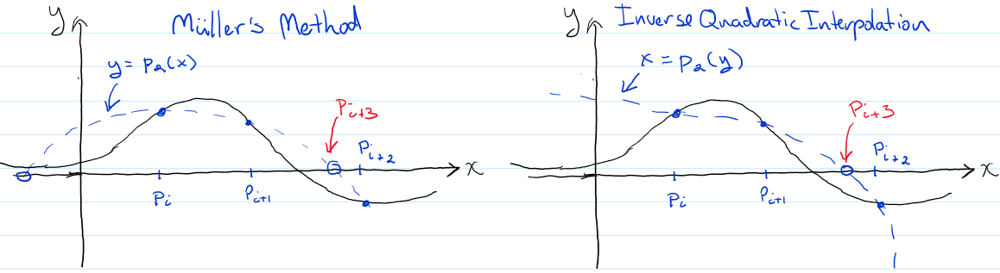

General Root Finding Algorithms#
To use Newton’s method, we need to know the derivative \(f'(x)\). However, sometimes we don’t know (or don’t want to evaluate) \(f'(x)\). In that case, we could try approximating \(f'(x)\) by
If we are close enough the to root to get convergence, as \(i\rightarrow \infty\) then \(p_{i-1}\rightarrow p_i\) so that this expression should approach the true derivative at \(f'(p_i)\). This gives us
Secant Method: Given \(p_0\) and \(p_1\) then
\[ p_{i+1}=p_i -\frac{f(p_i)}{\left[\frac{f(p_i)-f(p_{i-1})}{p_i-p_{i-1}}\right]},\qquad i=1,2,3,\cdots \]
There is a cost in doing this in that i) we need two initial guesses and ii) the rate of convergence turns out to be \(\alpha \approx 1.618\) which is less than the quadratic convergence of Newton’s method but still much better than linear convergence.
It is also reasonable to ask: Can we do better? The secant method can also be derived from fitting a line to the points \((p_{i-1},f(p_{i-1}))\) and \((p_{i},f(p_{i}))\) and finding where that line crosses zero. Once we have three guesses, we could fit a quadratic polynomial through the three points. There are actually two choices here, as illustrated in the following sketch:
{kind=link}
In Müller’s method, illustrated in the left panel above, one uses the previous three points to construct the quadratic polynomial \(P(x)=a(x-p_{i})^2+b(x-p_{i})+c\) (we will discuss how to find an interpolating polynomial going through three points in a later chapter). One then uses the quadratic formula to find the roots of \(P(x)\) and then picks one of those, usually the closest to \(p_{i}\) as the next guess \(p_{i+1}\). In addition to the issue that we need to select one of two roots, there is also the possibility that both roots could be complex. If we are looking for complex roots this is not a problem, but otherwise we are stuck unless we continue the iterations using complex number arithmetic. As a result, Müller’s method’s is primarily used only in the context of finding complex roots.
Our alternative, namely Inverse Quadratic Interpolation (IQI), instead constructs a quadratic polynomial \(x=P(y)=a y^2+b y+c\) from the previous three iterates as illustrated in the right panel of the figure above. This parabola will intersect the x-axis at a single real-numbered point (just plug in \(y=0\)). It turns out that IQI has rate of convergence \(\alpha\approx 1.8\), so not quite as good a Newton’s method, but better than the Secant method.
The secant, or quadratic methods relieve us of the issue of needing to compute a derivative of our function, but they don’t change the requirement that we need to start in a neighborhood of the root in order to converge. This is compounded by the fact that we don’t actualy know the size of the neighborhood a priori. There are several hybrid methods that combine different schemes we have discussed to provide the certainty of Bisection with the speed of a superlinear method. The most popular of these is Brent’s Method which follows the following scheme given in pseudocode:
Brent’s Method
1. Bracket root of f(x) on some interval [a,b]
Try secant method to get p3, using a=p1 and b=p2
If (|f(p3| < |f(a)|) AND (|f(p3| < |f(a)|) AND (min(|a-p3|,|b-p3|) < |b-a|/2)
then
accept p3 and replace a or b with p3 keeping root bracketed in [a,b]
else use bisection to find p3
for i=3 to max iteration
Try IQI on last 3 iterates to generate pi+1
If (|f(pi+1| < |f(pi)|) AND (min(|a-pi+1|,|b-pi+1|) < |b-a|/2)
then
accept pi+1 and replace a or b with pi+1 keeping root bracketed in [a,b]
else
Try secant method with the same test
If test fails, use bisection
SciPy has an implementation of Brent’s method, brentq, in its Optimization and Root finding submodule. You must bracket the root yourself before calling though.
Example: Let’s use Brent’s method to find the root of the function \(f(x)=e^{-x}\cos{x}\) that we previously bracketed in the interval \([1,2]\) in the Bisection section.
import numpy as np
def my_f(x):
return np.exp(-x)*np.cos(x)
from scipy import optimize
root = optimize.brentq(my_f, 1, 2)
print(f"Best guess for root is {root}\n")
print("Again with full output:")
optimize.brentq(my_f, 1, 2, full_output=True)
Best guess for root is 1.57079632679499
Again with full output:
(1.57079632679499,
converged: True
flag: converged
function_calls: 10
iterations: 9
root: 1.57079632679499
method: brentq)
We can also specify an absolute error test with optional parameter xtol or a relative error test with optional parameter rtol, or a mixed test by specifying both, as well as a maximum number of iterations as with our previous examples
root = optimize.brentq(my_f, 1, 2, xtol=2e-12, rtol=8.9e-16, maxiter=100)
print(f"Best guess for root is {root}\n")
Best guess for root is 1.57079632679499
In practise, Newton and Brent’s method are the main root finding methods used.
An exception occurs when you have a root of multiplicity greater than one where Newton’s method converges only linearly. You can either accept the slower convergence or fix this by modifying Newton’s method however if you don’t know the multiplicity of the root you will have the added cost of supplying not only the first but also the second derivative.
Another exception is when you wish to find the roots of a polynomial. In this case, you can take advantage of the special structure of the polynomial to construct an algorithm for finding not just one, but all of the polynomials roots. An example of such an algorithm is Laguerre’s Method and others.
All the methods in this chapter have focused on one-dimensional problems. In many cases we need to find the solution to equations containing more than one variable. To solve these, we need to first review solving linear systems of equations, which is the subject of the next chapter.